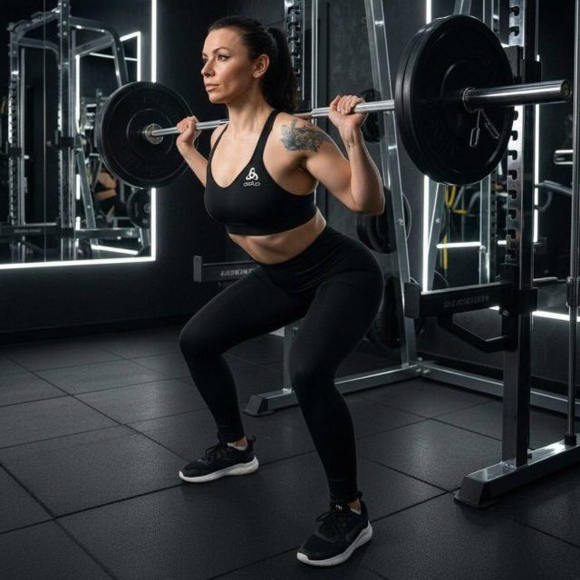
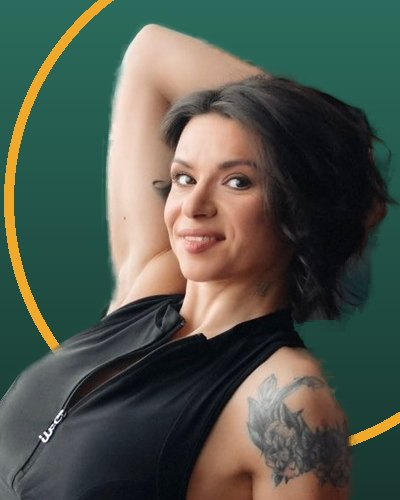
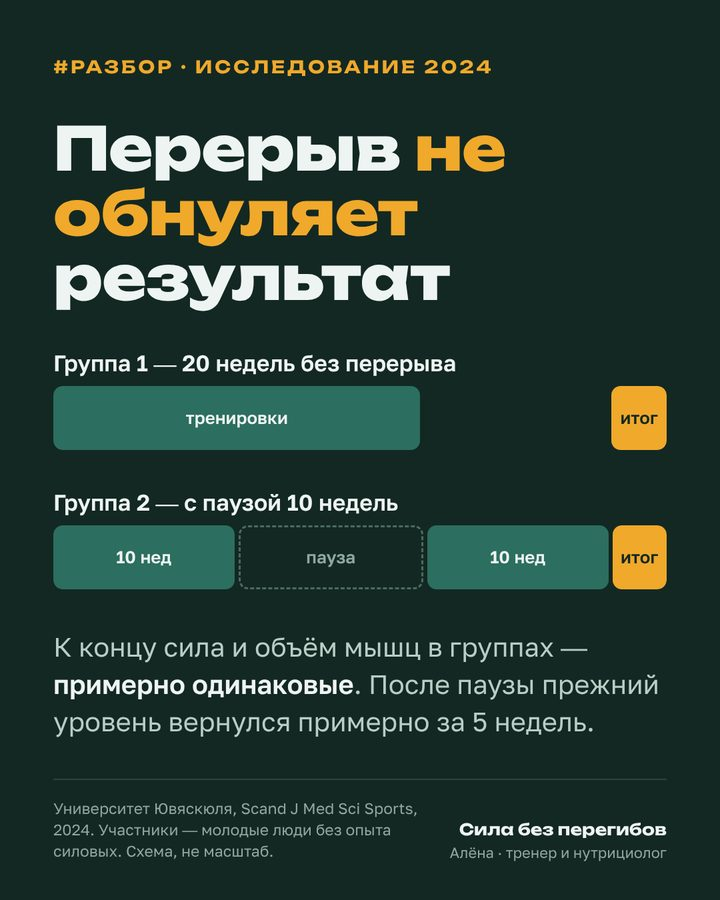
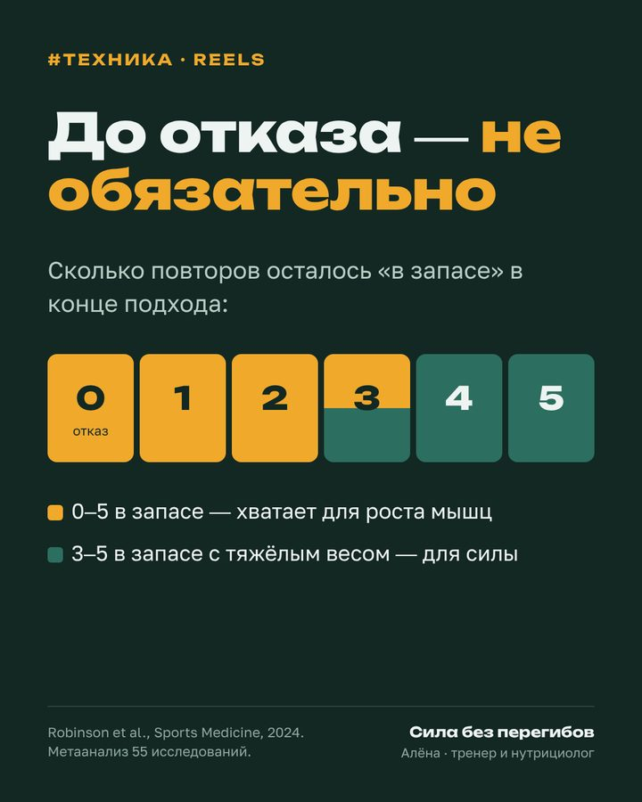
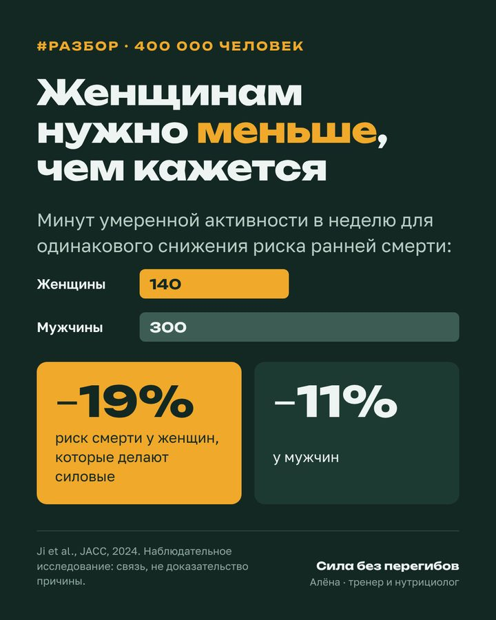

Возвращаетесь после паузы
Страшно начинать заново и хочется наверстать всё сразу.
Входим в нагрузку постепенно. Перерыв не обнуляет результат.

Тренер и нутрициолог 105 кгстановая, бронза WRPFСиловые тренировки с упором на технику и питание без запретов. Для тех, кто возвращается в зал после паузы, совмещает спорт с работой или боится травм.
Сначала короткий созвон о вашей цели, потом решаете. Отвечаю с 9 до 21.

Не фитнес. Не спорт. Сила для жизни.
Не ради медалей и не ради фото. Ради обычной жизни: поднять ребёнка или чемодан, донести пакеты, выдержать рабочую неделю — и не сорвать спину.

За плечами бодибилдинг и пауэрлифтинг: готовилась к соревнованиям в категории фитнес-бикини, а в пауэрлифтинге взяла бронзу WRPF в становой тяге — 105 кг. Знаю, как устроены силовые тренировки и почему желание «сделать идеально» мешает заниматься регулярно.
Моя позиция простая: тренировки должны делать жизнь лучше, а не становиться второй работой.
Страшно начинать заново и хочется наверстать всё сразу.
Входим в нагрузку постепенно. Перерыв не обнуляет результат.
Работа и семья, на зал остаётся пара вечеров.
3 тренировки в неделю, которые помещаются в ваш график.
Непонятно, правильно ли делаете присед и тягу.
Разбираю видео ваших подходов. Сначала уверенность, потом веса.
Запреты, срывы и подсчёт каждой крошки.
Разбор рациона и план питания без запретов на любимую еду.
Четыре вопроса — и подскажу, с чего начать. Ответы никуда не отправляются.
Пишете «СТАРТ» в TelegramМожно одним словом, остальное спрошу сама.
Созвон на 15–20 минутЦель, опыт, график, оборудование и ограничения.
Подбираем форматОнлайн или группа. Если не подойдёт ни один, скажу честно.
Тренируемся и растёмПрограмма, разбор техники и корректировки без рывков.
Одновременно веду 4–6 клиентов, чтобы хватало внимания каждому. Оплата по СБП или ссылке, чек самозанятой.
Записаться — «СТАРТ»Студия Sequoia D Anima, наб. р. Мойки, 62/2, м. Адмиралтейская. Все уровни подготовки.
Как добраться — открыть в Яндекс.Картах →Ягодицы + кор55 минут · до 6 человек
Ягодицы + кор55 минут · до 6 человек
Растяжка55 минут · до 5 человек
Три вывода, на которых строятся мои программы. Полные разборы — в канале.
Университет Ювяскюля, Scand J Med Sci Sports, 2024. Участники — молодые люди без опыта силовых.
Robinson et al., Sports Medicine, 2024. Метаанализ исследований силовых программ.
Ji et al., JACC, 2024, около 400 000 человек. Наблюдательное исследование: связь, а не доказательство причины.
Как это выглядит в канале



Я не врач и не заменяю лечение. При травмах, заболеваниях или трудностях с пищевым поведением сначала обратитесь к профильному специалисту, а тренировки согласуем с его рекомендациями.
Свежие заголовки научных изданий о тренировках и питании, обновляются каждый день.
Нет. Программа строится от вашего уровня, технику разбираем с первых тренировок.
Да. Программу собираю под то, что есть: зал, гантели дома или собственный вес.
В первый месяц после каждой тренировки присылаете видео последних секунд последнего подхода. Я смотрю и пишу, что поправить.
Ничего страшного. Подстроим программу и вернёмся в ритм без «отработок».
Да, после разбора рациона. Без универсальных диет, «сушек» и запретов на любимую еду.
Нет. Результат зависит от регулярности, сна, питания и здоровья. Обещаю понятный план и внимание к технике.
По СБП или по ссылке. Я работаю как самозанятая и присылаю чек.
Напишите «СТАРТ» в Telegram — расскажу, какой формат подойдёт именно вам.